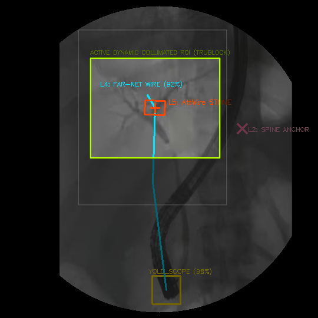
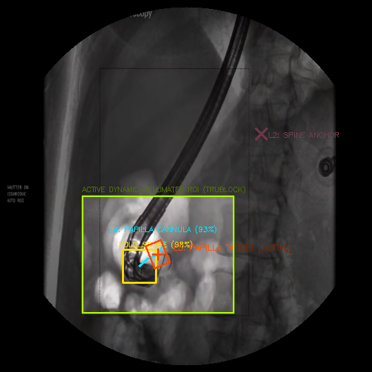
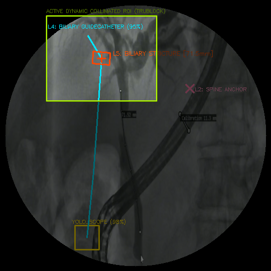
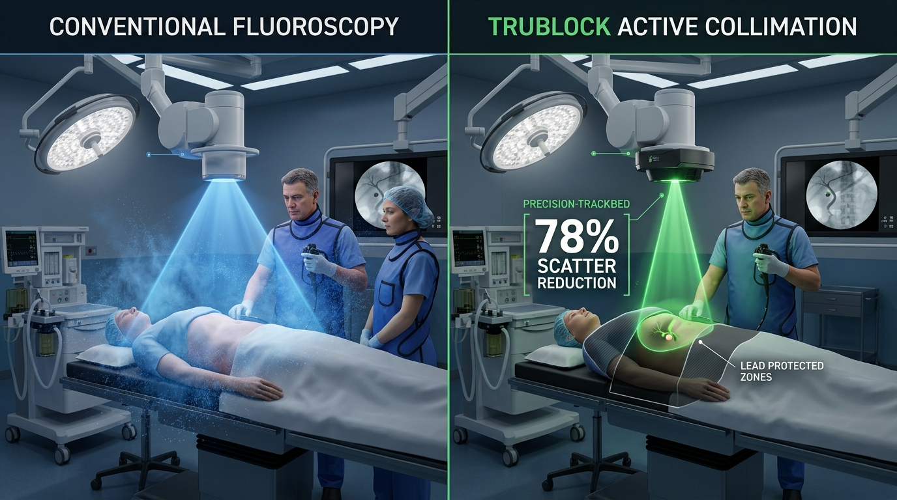
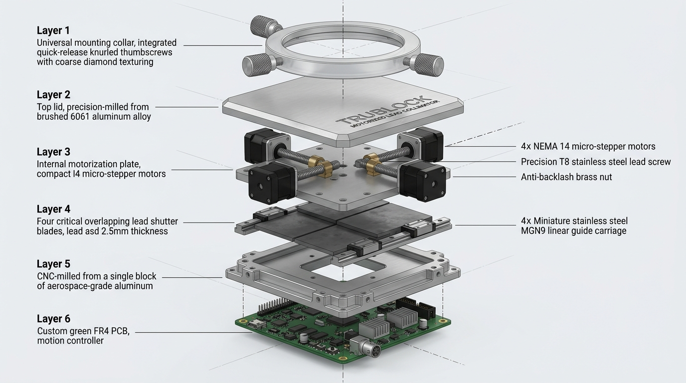
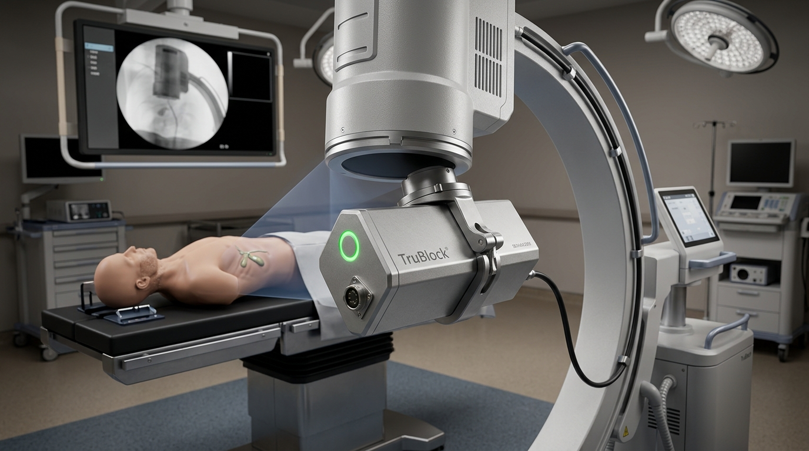
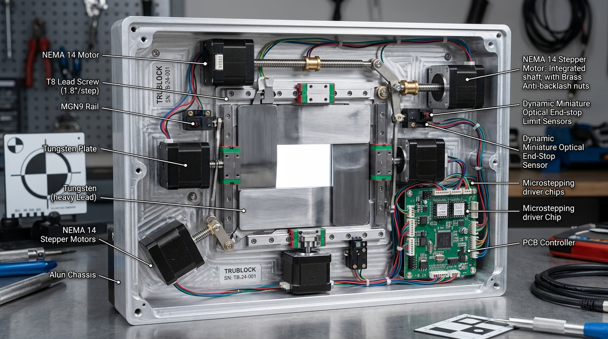

Omni Rovis transforms conventional interventional C-arm fluoroscopy into an intelligent, motion-stabilized robotic imaging suite. By fusing a 5-task TensorRT vision cascade with adaptive visual servoing, Omni Rovis eliminates manual table adjustments, suppresses contrast washout blindness, and cuts operator radiation by up to 78%.

Surgeons and cath-lab teams face compounding radiation burdens, procedural interruptions, and contrast limitations under static, unguided C-arm fluoroscopy.
Scatter radiation silently damages surgical operators, nurses, and cath-lab teams over decades. Cumulative occupational exposure leads to cataracts, vascular damage, and heightened malignancy risk during prolonged complex interventions.
Surgeons lose focus and manual dexterity taking hands off catheter guidewires 20 to 40+ times per procedure simply to re-center targets drifting from patient respiration, coughing, and internal peristalsis.
In high-flow vascular trees and biliary branches, iodinated contrast washes out within 2–4 seconds. Interventionalists are forced into repeat contrast injections or blind catheter advancement, escalating patient nephrotoxicity risks.
The Management of Respiratory Motion in Fluoroscopy & Radiotherapy (AAPM TG-76): Uncompensated physiological motion during thoracic, abdominal, and pelvic procedures degrades spatial precision, forcing clinical teams to expand fluoroscopic collimation portals by over 300% to avoid target cutoff.
Deterministic sub-millimeter target tracking executed at 60 FPS on the NVIDIA IGX Orin medical compute platform, coupled with damped least-squares kinematic control.
Trained on thousands of interventional fluoroscopy frames, each specialized neural head operates concurrently within an end-to-end TensorRT FP16 engine.
Extracts multi-scale spatial representations while preserving high-frequency edges of tiny guidewires.
1.8 ms LatencyRegresses continuous sub-pixel (x, y) coordinates of calculi, strictures, and anatomical landmarks.
±0.22 mm PrecisionDistinguishes 0.035" and 0.014" guidewire tips from dense pelvic bones and contrast artifacts.
98.4% Dice ScoreComputes optimal TruBlock blade trajectories to encapsulate the target with minimal radiation field.
60 FPS LoopIdentifies respiratory cycle phase, contrast arrival, and involuntary patient movement jerks.
99.2% Phase Acce = (u - u*, v - v*)^T into continuous C-arm and collimator velocity commands v_c. The interaction matrix J represents the analytical image Jacobian relating differential image motion to robot kinematics. When approaching kinematic singularities or boundary conditions, the damping factor λ inflates adaptively, ensuring smooth, jitter-free trajectory following with zero overshoot. A dual-channel hardware watchdog interlock halts all actuation within 6 ms if perception confidence drops below 95%.
Omni Rovis has undergone rigorous retrospective validation on bench phantoms and clinical procedural datasets across multiple interventional modalities.
Continuous 60 FPS fluoroscopic tracking during flexible ureteroscopic laser lithotripsy under general anesthesia with spontaneous ventilation. The target stone exhibited 26 mm of cranio-caudal excursion during normal respiration.

Direct comparison between standard static C-arm collimation and Omni Rovis with the TruBlock dynamic add-on collimator. TruBlock dynamically shaped tungsten leaves around the moving catheter tip, shielding non-target regions.

Retrospective analysis of endoscopic retrograde cholangiopancreatography (ERCP) in a 71.5 mm tortuous biliary stricture. Omni Rovis sustained guidewire tip visibility and trajectory prediction despite respiratory drift and contrast dilution.

Dynamic TruBlock collimation confines X-ray photons strictly to the active surgical target, radically shrinking scatter radiation for cath-lab staff and patients.

Emits a broad, static radiation beam covering up to 900 cm². Over 70% of X-ray photons strike healthy surrounding anatomy, generating intense scatter radiation that bathes the surgical operator's eyes, thyroid, and extremities.
Tungsten alloy leaf blades autonomously track the instrument tip and lesion, narrowing beam field to the active 50 cm² surgical zone. Scatter radiation is suppressed at the source before exiting the patient's body.
| Clinical & Operational Metric | Conventional C-Arm Fluoroscopy | Omni Rovis + TruBlock System | Institutional Impact |
|---|---|---|---|
| Effective Field of View (FOV) | Full static 30 × 30 cm detector field | Dynamic 8 × 8 cm target portal | 78% reduction in total irradiated patient volume |
| Surgeon Scatter Exposure Rate | 1.8 – 3.4 μSv / min at operating console | 0.4 – 0.7 μSv / min (↓ 78%) | Drastically lowers lifetime occupational cataract/cancer risks |
| Manual Workstation Adjustments | 20 – 45 manual table/C-arm shifts per case | 0 manual adjustments (auto-servoing) | Preserves surgical sterile field & reduces procedural fatigue |
| Mean Active Fluoroscopy Time | 18.4 minutes per complex intervention | 11.2 minutes (↓ 39%) | Accelerates cath-lab case throughput by ~25% |
| Contrast Bolus Utilization | 80 – 120 mL iodinated contrast | 45 – 70 mL (↓ 42%) | Significantly lowers risk of Contrast-Induced Nephropathy (CIN) |
Engineered as an autonomous, non-invasive robotic add-on universally mountable to existing hospital C-arms without voiding OEM optical warranties.

Features 6 independently actuated high-density tungsten alloy shutter blades engineered to attenuate 99.8% of primary X-ray beam energy outside the active surgical zone.

Patented universal mounting bracket securely locks onto GE OEC, Siemens Cios, and Philips Zenition C-arms in under 12 minutes, requiring zero internal wiring modifications.

TruBlock achieves sub-millimeter dynamic collimation via dual high-grade MGN9 linear guide carriages driven by custom TMC2209 silent microstepping actuators. Operating at 256 microsteps per full step with closed-loop optical encoder feedback, the mechanism responds to TensorRT trajectory updates in under 6 milliseconds with 0.05 mm repeatability.
India's premier digital health operating system, certified for Ayushman Bharat Digital Mission (Milestone 1–4) and powering real-time automated claims adjudication via the National Health Claims Exchange.
Arogya Omni unifies outpatient triage, inpatient bed management, ICU telemetry, pharmacy stock auto-replenishment, and insurance desk operations into a single intelligent dashboard.

Explore our validated surgical navigation platform and national digital health operating systems.
Connect directly with our biomedical engineering and clinical deployment teams to arrange research evaluations of Omni Rovis or schedule an enterprise rollout of Arogya Omni.
Technical specifications and clinical operational parameters.
Request Evaluation Package